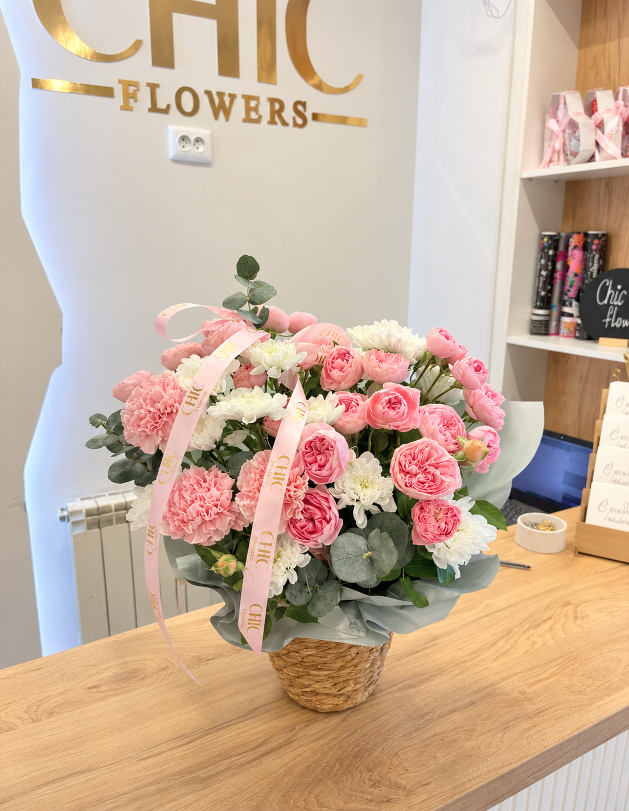
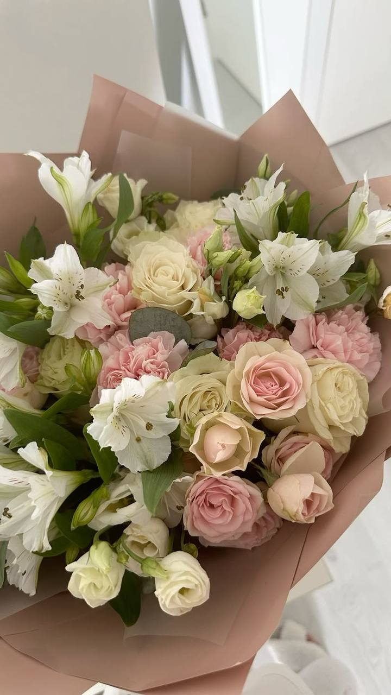
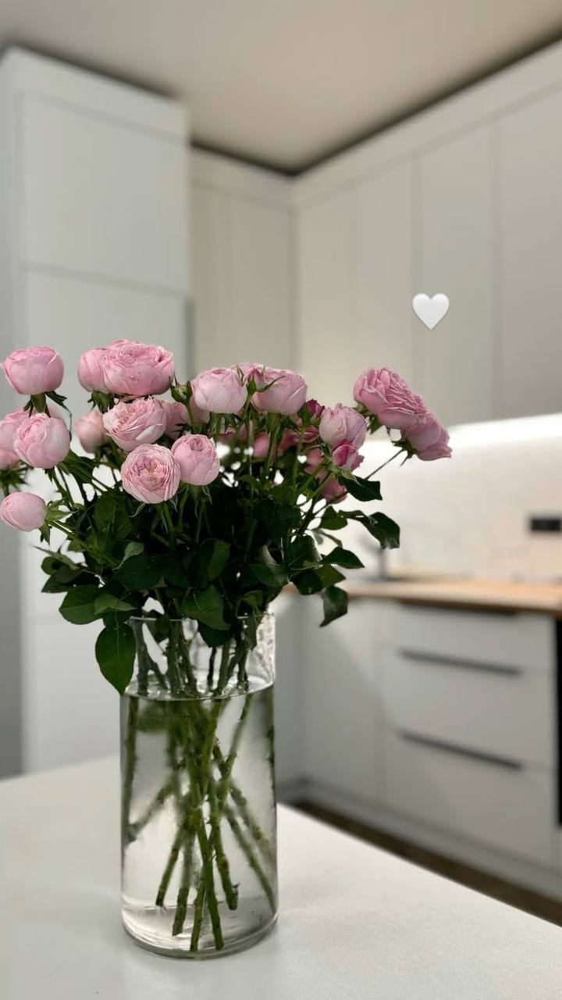

What Flowers to Give Your Girlfriend
Ideas for choosing a beautiful bouquet for a romantic and memorable gift.
Read MoreCHIC FLOWERS · ASTANA
Simple advice about choosing flowers, making someone smile and caring for your bouquet.
Explore collection
Ideas for choosing a beautiful bouquet for a romantic and memorable gift.
Read More
Ideas for choosing flowers to show love, care and appreciation for your mom.
Read More
Simple care tips that can help your bouquet stay fresh and beautiful for longer.
Read MoreChoosing flowers for a girl depends on the occasion and her personal preferences. For a first date, soft and romantic flowers are a great choice.
The best bouquet is the one that matches her personality and preferences. If you are not sure what to choose, go for soft pink or white flowers — they are a beautiful choice for almost any occasion.
Flowers are a beautiful way to show your mom love, gratitude, and care. When choosing a bouquet, think about her favorite colors, flowers, and personality.
Choose flowers that match your mom's personality. Bright colors are great for energetic moms, while soft pastel colors are perfect for calm and romantic personalities.
If your mom is sensitive to strong scents, avoid highly fragrant flowers such as lilies. Add a small card with warm words to make your gift more personal.
Fresh flowers can stay beautiful longer with proper care. Follow these simple tips to keep your bouquet fresh.
Check your flowers every day, remove wilted flowers, and keep the vase clean. With a little care, your bouquet can stay fresh and beautiful for longer.
Browse available arrangements, compare prices and contact our shop to arrange an order.